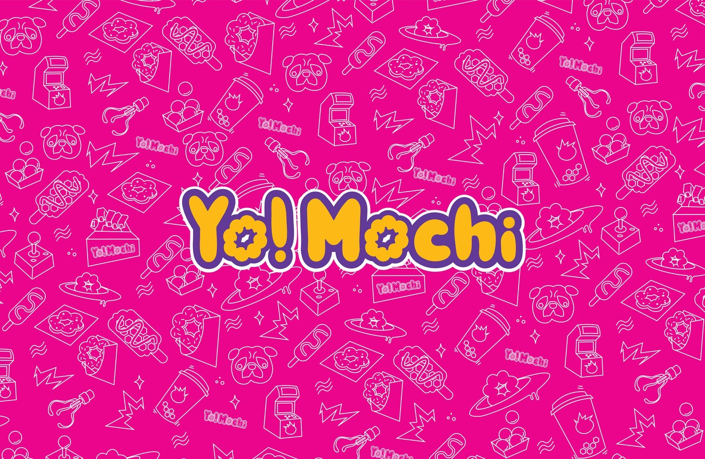
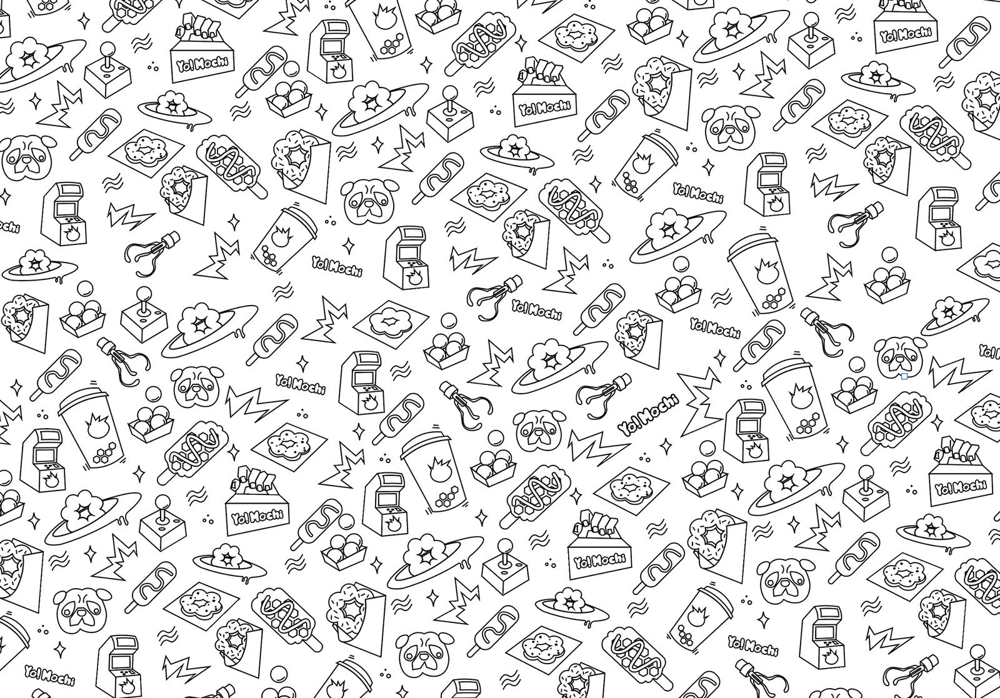
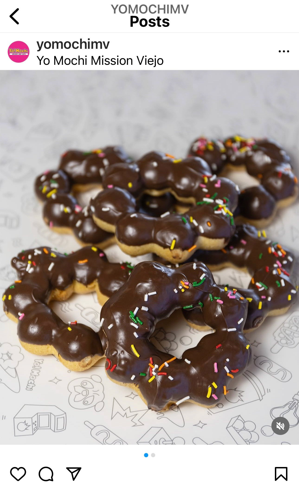
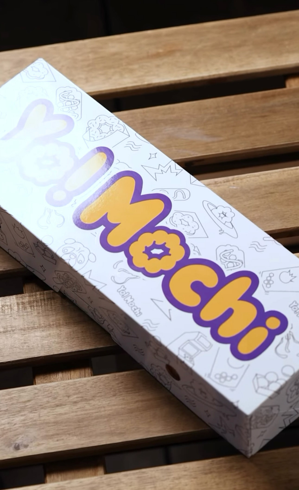

Yo! Mochi
Yo! Mochi is an arcade-and-cafe chain serving mochi donuts, Korean corn dogs, and boba drinks alongside a retro arcade, with locations in Mission Viejo and across Nevada.
Year2024
OrganizationFreelance
RoleIllustration, Pattern Design
ToolsIllustrator
Pattern Design
A continuous repeating pattern built from Yo! Mochi's brand and menu (donuts, corn dogs, boba, the arcade cabinet, and their pug mascot), reworked cleaner and more minimal than the brand's usual look so it could stretch across food wrappers, packaging, and anywhere else the brand shows up.



